산업안전기사 (2014-08-17 기출문제)
1과목: 안전관리론
1. 다음 중 산업안전보건법령상 사업내 안전보건.교육에 있어 관리감독자 정기안전.보건교육의 교육 내용에 해당 되지 않은 것은? (단, 산업안전보건법 및 일반관리에 관한 사항은 제외한다.)
- 작업개시 전 점검에 관한 사항
- 산업보건 및 직업병 예방에 관한 사항
- 유해.위험 작업환경 관리에 관한 사항
- 작업공정의 유해.위험과 재해 예방대책에 관한 사항
(정답률: 71%)

2. 다음 중 데이비스(K. Davis)의 동기부여 이론에서 인간의 성과(human performance)를 가장 적합하게 나타낸 것은?
- 지식(knowledge) × 기능(skill)
- 기능(skill) × 상황(situation)
- 상황(situation) × 태도(attitude)
- 능력(ability) × 동기유발(motivation)
(정답률: 78%)
3. 다음 중 브레인스토밍(brain-storming) 기법에 관한 설명으로 옳은 것은?
- 타인의 의견에 대하여 장, 단점을 표현할 수 있다.
- 발언은 순서대로 하거나, 균등한 기회를 부여한다.
- 주제와 관련이 없는 사항이라도 발언을 할 수 있다.
- 이미 제시된 의견과 유사한 사항은 피하여 발언한다.
(정답률: 81%)
4. 안전관리를 “안전은 ( ① )을(를) 제어하는 기술”이라 정의할 때 다음 중 ①에 들어갈 용어로 예방 관리적 차원과 가장 가까운 용어는?
- 위험
- 사고
- 재해
- 상해
(정답률: 75%)
5. 다음 중 산업재해 통계의 활용 용도로 가장 적절하지 않은 것은?
- 제도의 개선 및 시정
- 재해의 경향파악
- 관리자 수준 향상
- 동종업종과의 비교
(정답률: 73%)
6. 다음 중 산업안전보건법령상 의무안전인증 대상 기계ㆍ기구 및 설비에 해당하지 않는 것은?
- 연삭기
- 압력용기
- 롤러기
- 고소(高所) 작업대
(정답률: 57%)
7. 다음 중 인간의 행동특성에 관한 레빈(Lewin)의 법칙 “B=f(PㆍE)” 에서 P에 해당되는 것은?
- 행동
- 소질
- 환경
- 함수
(정답률: 82%)
8. [표]는 A작업장을 하루 10회 순회하면서 적발된 불안전한 행동건수이다. A작업장의 1일 불안전한 행동률은 약 얼마인가?
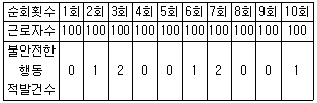
- 0.07%
- 0.7%
- 7%
- 70%
(정답률: 60%)
9. 다음 중 산업재해가 발생하였을 때 [보기]의 각 단계를 긴급처치의 순서대로 가장 적절하게 나열한 것은?
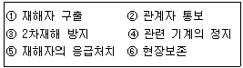
- ① → ④ → ② → ⑤ → ③ → ⑥
- ② → ① → ④ → ⑤ → ③ → ⑥
- ④ → ① → ⑤ → ② → ③ → ⑥
- ⑤ → ① → ④ → ③ → ② → ⑥
(정답률: 83%)
10. 다음 중 리더의 행동스타일 리더십을 연결시킨 것으로 잘못 연결된 것은?
- 부하 중심적 리더십 - 치밀한 감독
- 직무 중심적 리더십 - 생산과업 중시
- 부하 중심적 리더십 - 부하와의 관계 중시
- 직무 중심적 리더십 - 공식권한과 권력에 의존
(정답률: 75%)
11. 안전교육의 내용에 있어 다음 설명과 가장 관계가 깊은 것은?
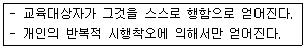
- 안전지식의 교육
- 안전기능의 교육
- 문제해결의 교육
- 안전태도의 교육
(정답률: 74%)
12. 기업 내 정형교육 중 TWI(training within industry)의 교육 내용에 있어 직장 내 부하 직원에 대하여 가르치는 기술과 관련이 가장 깊은 기법은?
- JIT(Job Instruction Training)
- JMT(Job Method Training)
- JRT(Job Relation Training)
- JST(Job Safety Training)
(정답률: 57%)
13. 다음 중 방독마스크의 성능기준에 있어 사용 장소에 따른 등급의 설명으로 틀린 것은?
- 고농도는 가스 또는 증기의 농도가 100분의 2 이하의 대기 중에서 사용하는 것을 말한다.
- 중농도는 가스 또는 증기의 농도가 100분의 1 이하의 대기 중에서 사용하는 것을 말한다.
- 저농도는 가스 또는 증기의 농도가 100분의 0.5 이하의 대기 중에서 사용하는 것으로서 긴급용이 아닌 것을 말한다.
- 고농도와 중농도에서 사용하는 방독마스크는 전면형(격리식, 직결식)을 사용해야 한다.
(정답률: 59%)
14. 기술교육의 형태 중 존 듀이(J.Dewey)의 사고과정 5단계에 해당하지 않은 것은?
- 추론한다.
- 시사를 받는다.
- 가설을 설정한다.
- 가슴으로 생각한다.
(정답률: 85%)
15. 다음 중 산업안전보건법령상 안전.보건표지의 종류에 있어 안내표지에 해당하지 않는 것은?
- 들것
- 비상용기구
- 출입구
- 세안장치
(정답률: 68%)
16. 다음 중 인간의 착각현상에서 움직이지 않는 것이 움직이는 것처럼 느껴지는 현상을 무엇이라 하는가?
- 유도운동
- 잔상운동
- 자동운동
- 유선운동
(정답률: 49%)
17. 다음 중 재해 예방의 4원칙에 관한 설명으로 적절하지 않은 것은?
- 재해의 발생에는 반드시 그 원인이 있다.
- 사고의 발생과 손실의 발생에는 우연적 관계가 있다.
- 재해는 원칙적으로 원인만 제거되면 예방이 가능하다.
- 재해예방을 위한 대책은 존재하지 않으므로 최소화에 중점을 두어야 한다.
(정답률: 82%)
18. 다음 중 line-staff형 안전조직에 관한 설명으로 가장 옳은 것은?
- 생산부문의 책임이 막중하다.
- 명령계통과 조언 권고적 참여가 혼동되기 쉽다.
- 안전지시나 조치가 철저하고, 실시가 빠르다.
- 생산부문에는 안전에 대한 책임과 권한이 없다.
(정답률: 70%)
19. 다음 중 안전교육 지도안의 4단계에 해당되지 않는 것은?
- 도입
- 적용
- 제시
- 보상
(정답률: 89%)
20. 다음 중 안전점검 방법에서 육안점검과 가장 관련이 깊은 것은?
- 테스트 해머 점검
- 부식.마모 점검
- 가스검지기 점검
- 온도계 점검
(정답률: 77%)
2과목: 인간공학 및 시스템안전공학
21. 다음 중 인간공학의 목표와 가장 거리가 먼 것은?
- 에러 감소
- 생산성 증대
- 안전성 향상
- 신체 건강 증진
(정답률: 64%)
22. 다음 중 설비보전의 조직 형태에서 집중보전(Central Maintenance)의 장점이 아닌 것은?
- 보전요원은 각 현장에 배치되어 있어 재빠르게 작업할 수 있다.
- 전 공장에 대한 판단으로 중점보전이 수행될 수 있다.
- 분업/전문화가 진행되어 전문적으로서 고도의 기술을 갖게 된다.
- 직종 간의 연락이 좋고, 공사 관리가 쉽다.
(정답률: 52%)
23. 다음 중 작동 중인 전자레인지의 문을 열면 작동이 자동으로 멈추는 기능과 가장 관련이 깊은 오류 방지 기능은?
- lock-in
- lock-out
- inter-lock
- shift-lock
(정답률: 81%)
24. 란돌트(Landolt) 고리에 있어 1.5mm의 틈을 5m의 거리에서 겨우 구분할 수 있는 사람의 최소분간시력은 약 얼마인가?
- 0.1
- 0.3
- 0.7
- 1.0
(정답률: 33%)
25. 인간-기계시스템의 설계를 6단계로 구분할 때 다음 중 첫 번째 단계에서 시행하는 것은?
- 기본설계
- 시스템의 정의
- 인터페이스 설계
- 시스템의 목표와 성능명세 결정
(정답률: 66%)
26. 다음 중 변화감지역(JND: Just noticeable difference)이 가장 작은 음은?
- 낮은 주파수와 작은 강도를 가진 음
- 낮은 주파수와 큰 강도를 가진 음
- 높은 주파수와 작은 강도를 가진 음
- 높은 주파수와 큰 강도를 가진 음
(정답률: 45%)
27. 시스템의 수명주기 중 PHA기법이 최초로 사용되는 단계는?
- 구상단계
- 정의단계
- 개발단계
- 생산단계
(정답률: 77%)
28. [그림]과 같은 FT도에 대한 미니멀 컷셋(minimal cut sets)으로 옳은 것은? (단, Fussell의 알고리즘을 따른다.)
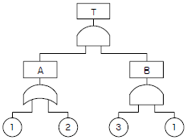
- {1,2}
- {1,3}
- {2.3}
- {1,2,3}
(정답률: 65%)
29. 다음 중 인간이 감지할 수 있는 외부의 물리적 자극 변화의 최소범위는 기준이 되는 자극의 크기에 비례하는 현상을 설명한 이론은?
- 웨버(Weber) 법칙
- 피츠(Fitts) 법칙
- 신호검출이론(SDT)
- 힉-하이만(Hick-Hyman) 법칙
(정답률: 67%)
30. A사의 안전관리자는 자사 화학 설비의 안전성 평가를 위해 제2단계인 정성적 평가를 진행하기 위하여 평가 항목 대상을 분류하였다. 다음 주요 평가 항목 중에서 성격이 다른 것은?
- 건조물
- 공장내 배치
- 입지조건
- 원재료, 중간제품
(정답률: 75%)
31. 위험 및 운전성 검토(HAZOP)에서의 전제조건으로 틀린 것은?
- 두 개 이상의 기기고장이나 사고는 일어나지 않는다.
- 조작자는 위험상황이 일어났을 때 그것을 인식할 수 있다.
- 안전장치는 필요할 때 정상 동작하지 않는 것으로 간주한다.
- 장치 자체는 설계 및 제작사양에 맞게 제작된 것으로 간주한다.
(정답률: 69%)
32. 날개가 2개인 비행기의 양 날개에 엔진이 각각 2개씩 있다. 이 비행기는 양 날개에서 각각 최소한 1개의 엔진은 작동을 해야 추락하지 않고 비행할 수 있다. 각 엔진의 신뢰도가 각각 0.9이며, 각 엔진은 독립적으로 작동한다고 할 때 이 비행기가 정상적으로 비행할 신뢰도는 약 얼마인가?
- 0.89
- 0.91
- 0.94
- 0.98
(정답률: 64%)
33. A자동차에서 근무하는 K씨는 지게차로 철강판을 하역 하는 업무를 한다. 지게차 운전으로 K씨에게 노출된 직업성 질환의 위험 요인과 동일한 위험 요인에 노출된 작업자는?
- 연마기 운전자
- 착암기 운전자
- 대형운송차량 운전자
- 목재용 치퍼(Chippers) 운전자
(정답률: 67%)
34. 다음 중 인간공학에 있어 인체측정의 원칙으로 가장 올바른 것은?
- 안전관리를 위한 자료
- 인간공학적 설계를 위한 자료
- 생산성 향상을 위한 자료
- 사고 예방을 위한 자료
(정답률: 75%)
35. 산업안전보건법령에 따라 유해.위험방지계획서를 제출 할 때에는 사업장 별로 관련 서류를 첨부하여 해당 작업 시작 며칠 전까지 해당 기관에 제출하여야 하는가?
- 7일
- 15일
- 30일
- 60일
(정답률: 68%)
36. 다음 중 몸의 중심선으로부터 밖으로 이동하는 신체 부위의 동작을 무엇이라 하는가?
- 외전
- 외선
- 내전
- 내선
(정답률: 61%)
37. FTA에서 사용하는 다음 사상기호에 대한 설명으로 옳은 것은?
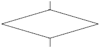
- 시스템 분석에서 좀 더 발전시켜야 하는 사상
- 시스템의 정상적인 가동상태에서 일어날 것이 기대되는 사상
- 불충분한 자료로 결론을 내릴 수 없어 더 이상 전개할 수 없는 사상
- 주어진 시스템의 기본사상으로 고장원인이 분석되었기 때문에 더 이상 분석할 필요가 없는 사상
(정답률: 75%)
38. 다음 중 결함수분석법에서 path set에 관한 설명으로 옳은 것은?
- 시스템의 약점을 표현한 것이다.
- Top 사상을 발생시키는 조합이다.
- 시스템이 고장 나지 않도록 하는 사상의 조합이다.
- 일반적으로 Fussell Algorithm을 이용한다.
(정답률: 79%)
39. 다음 중 적정온도에서 추운 환경으로 바뀔 때의 현상으로 틀린 것은?(문제 오류로 실제 시험에서는 1, 4번이 정답 처리되었습니다. 여기서는 1번을 누르면 정답 처리 됩니다.)
- 직장의 온도가 내려간다.
- 피부의 온도가 내려간다.
- 몸이 떨리고 소름이 돋는다.
- 피부를 경유하는 혈액 순환량이 증가한다.
(정답률: 83%)
40. 다음 중 의자 설계의 일반원리로 옳지 않은 것은?
- 추간판의 압력을 줄인다.
- 등근육의 정적 부하를 줄인다.
- 쉽게 조절할 수 있도록 한다.
- 고정된 자세로 장시간 유지되도록 한다.
(정답률: 84%)
3과목: 기계위험방지기술
41. 다음 중 산업안전보건법령에 따라 산업용 로봇의 사용 및 수리 등에 관한 사항으로 틀린 것은?
- 작업을 하고 있는 동안 로봇의 가동스위치 등에 “작업중“이라는 표시를 하여야 한다.
- 해당 작업에 종사하고 있는 근로자의 안전한 작업을 위하여 작업종사자 외의 사람이 가동스위치를 조작 할 수 있도록 하여야 한다.
- 로봇을 운전하는 경우에 근로자가 로봇에 부딪칠 위험이 있을 때에는 안전매트 및 높이 1.8m 이상의 방책을 설치하는 등 필요한 조치를 하여야 한다.
- 로봇의 작동범위에서 해당 로봇의 수리.검사.조정.청소.급유 또는 결과에 대한 확인작업을 하는 경우에는 해당 로봇의 운전을 정지함과 동시에 그 작업을 하고 있는 동안 로봇의 가동스위치를 열쇠로 잠근 후 열쇠를 별도 관리하여야 한다.
(정답률: 84%)
42. 다음 중 프레스 등의 금형을 부착.해체 또는 조정하는 작업을 할 때 급작스런 슬라이드의 작동에 대비한 방호장치로 가장 적절한 것은?
- 접촉예방장치
- 권과방지장치
- 과부하방지장치
- 안전블록
(정답률: 83%)
43. 회전축이나 베어링 등이 마모 등으로 변형되거나 회전의 불균형에 의하여 발생하는 진동을 무엇이라고 하는가?
- 단속진동
- 정상진동
- 충격진동
- 우연진동
(정답률: 47%)
44. 산업안전보건법령에 따라 레버풀러(lever puller) 또는 체인블록(chain block)을 사용하는 경우 훅의 입구(hook mouth) 간격이 제조사가 제공하는 제품사양서 기준으로 얼마 이상 벌어진 것을 폐기하여야 하는가?
- 3%
- 5%
- 7%
- 10%
(정답률: 59%)
45. 다음 중 재료이송방법의 자동화에 있어 송급배출장치가 아닌 것은?
- 다이얼피더
- 슈트
- 에어분사장치
- 푸셔피더
(정답률: 51%)
46. 다음 중 아세틸렌 용접장치에서 역화의 원인과 가장 거리가 먼 것은?
- 아세틸렌의 공급 과다
- 토치 성능의 부실
- 압력조정기의 고장
- 토치 팁에 이물질이 묻은 경우
(정답률: 69%)
47. 다음 중 세이퍼와 플레이너(planer)의 방호장치가 아닌 것은?
- 방책
- 칩받이
- 칸막이
- 칩 브레이크
(정답률: 68%)
48. 다음 중 방사선 투과검사에 가장 적합한 활용 분야는?
- 변형율 측정
- 완제품의 표면결함 검사
- 재료 및 기기의 계측 검사
- 재료 및 용접부의 내부결함 검사
(정답률: 81%)
49. 선반으로 작업을 하고자 지름 30mm의 일감을 고정하고, 500rpm으로 회전시켰을 때 일감 표면의 원주 속도는 약 몇 m/s인가?
- 0.628
- 0.785
- 23.56
- 47.12
(정답률: 28%)
50. 다음 중 밀링작업시 하향절삭의 장점에 해당되지 않는 것은?
- 일감의 고정이 간편하다.
- 일감의 가공면이 깨끗하다.
- 이송기구의 빽래시(backlash)가 자연히 제거된다.
- 밀링커터의 날이 마찰작용을 하지 않으므로 수명이 길다.
(정답률: 60%)
51. 다음 중 상부를 사용할 것을 목적으로 하는 탁상용 연삭기 덮개의 노출 각도로 옳은 것은?
- 180° 이상
- 120° 이내
- 60° 이내
- 15° 이내
(정답률: 65%)
52. 허용응력이 100kgf/mm2이고, 단면적이 2mm2인 강판의 극한하중이 400kgf이라면 안전율은 얼마인가?
- 2
- 4
- 5
- 50
(정답률: 62%)
53. 다음 중 산업안전보건법령상 보일러 및 압력용기에 관한 사항으로 틀린 것은?
- 보일러의 안전한 가동을 위하여 보일러 규격에 맞는 압력방출장치를 1개 또는 2개 이상 설치하고 최고 사용압력 이하에서 작동되도록 하여야 한다.
- 공정안전보고서 제출대상으로서 이행수준 평가결과가 우수한 사업장의 경우 보일러의 압력방출장치에 대하여 5년에 1회 이상으로 설정압력에서 압력방출장치가 적정하게 작동하는지를 검사할 수 있다.
- 보일러의 과열을 방지하기 위하여 최고사용압력과 상용압력 사이에서 보일러의 버너연소를 차단할 수 있도록 압력제한스위치를 부착하여 사용하여야 한다.
- 압력용기 등을 식별할 수 있도록 하기 위하여 그 압력 용기등의 최고사용압력, 제조연월일, 제조회사명등이 지워지지 않도록 각인(刻印) 표시된 것을 사용하여야 한다.
(정답률: 79%)
54. 다음 중 양중기에서 사용하는 해지장치에 관한 설명으로 가장 적합한 것은?
- 2중으로 설치되는 권과방지장치를 말한다.
- 화물의 인양시 발생하는 충격을 완화하는 장치이다.
- 과부하 발생시 자동적으로 전류를 차단하는 방지장치이다.
- 와이어 로프가 훅크에서 이탈하는 것을 방지하는 장치이다.
(정답률: 77%)
55. 다음 중 프레스의 방호장치에 관한 설명으로 틀린 것은?
- 양수조작식 방호장치는 1행정1정지 기구에 사용할 수 있어야 한다.
- 손쳐내기식 방호장치는 슬라이드 하행정거리의 3/4 위치에서 손을 완전히 밀어내야 한다.
- 광전자식 방호장치의 정상동작표시램프는 붉은색, 위험표시램프는 녹색으로 하며 쉽게 근로자가 볼 수 있는 곳에 설치해야 한다.
- 게이트 가드 방호장치는 가드가 열린 상태에서 슬라이드를 동작시킬 수 없고 또한 슬라이드 작동 중에는 게이트 가드를 열 수 없어야 한다.
(정답률: 84%)
56. 산업안전보건법령상 지게차의 최대하중의 2배값이 6톤일 경우 헤드가드의 강도는 몇 톤의 등분포정하중에 견딜수 있어야 하는가?
- 4
- 6
- 8
- 12
(정답률: 62%)
57. 다음 중 목재가공기계의 반발예방장치와 같이 위험장소에 설치하여 위험원이 비산하거나 튀는것을 방지하는 등 작업자로부터 위험원을 차단하는 방호장치는?
- 포집형 방호장치
- 감지형 방호장치
- 위치 제한형 방호장치
- 접근 반응형 방호장치
(정답률: 66%)
58. 다음 중 프레스기에 사용되는 방호장치에 있어 급정지 기구가 부착되어야만 유효한 것은?
- 양수조작식
- 손쳐내기식
- 가드식
- 수인식
(정답률: 69%)
59. 다음 중 롤러기의 두 롤러 사이에서 형성되는 위험점은?
- 협착점
- 물림점
- 접선물림점
- 회전말림점
(정답률: 66%)
60. 다음 중 와이어로프의 꼬임에 관한 설명으로 틀린 것은?
- 보통꼬임에는 S꼬임이나 Z꼬임이 있다.
- 보통꼬임은 스트랜드의 꼬임방향과 로프의 꼬임방향이 반대로 된 것을 말한다.
- 랭꼬임은 로프의 끝이 자유로이 회전하는 경우나 킹크가 생기기 쉬운 곳에 적당하다.
- 랭꼬임은 보통꼬임에 비하여 마모에 대한 저항성이 우수하다.
(정답률: 66%)
4과목: 전기위험방지기술
61. 대지에서 용접작업을 하고 있는 작업자가 용접봉에 접촉한 경우 통전전류는?
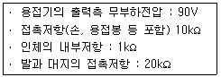
- 약 0.19mA
- 약 0.29mA
- 약 1.96mA
- 약 2.90mA
(정답률: 34%)
62. 임시배선의 안전대책으로 틀린 것은?
- 모든 배선은 반드시 분전반 또는 배전반에서 인출해야 한다.
- 중량물의 압력 또는 기계적 충격을 받을 우려가 있는 곳에 설치할 때는 사전에 적절한 방호조치를 한다.
- 케이블 트레이나 전선관의 케이블에 임시배선용 케이블을 연결할 경우는 접속함을 사용하여 접속해야 한다.
- 지상 등에서 금속관으로 방호할 때는 그 금속관을 접지하지 않아도 된다.
(정답률: 76%)
63. 피뢰기가 갖추어야 할 이상적인 성능 중 잘못된 것은?
- 제한전압이 낮아야 한다.
- 반복동작이 가능하여야 한다.
- 충격방전 개시전압이 높아야 한다.
- 뇌전류의 방전능력이 크고 속류의 차단이 확실하여야 한다.
(정답률: 69%)
64. 전기화재 발화원으로 관계가 먼 것은?
- 단열 압축
- 광선 및 방사선
- 낙뢰(벼락)
- 기계적 정지 에너지
(정답률: 66%)
65. 스파크 화재의 방지책이 아닌 것은?
- 통형퓨즈를 사용할 것
- 개폐기를 불연성의 외함 내에 내장시킬 것
- 가연성 증기, 분진 등 위험한 물질이 있는 곳에는 방폭형 개폐기를 사용할 것
- 전기배선이 접속되는 단자의 접촉저항을 증가시킬 것
(정답률: 59%)
66. 고장전류와 같은 대전류를 차단할 수 있는 것은?
- 차단기(CB)
- 유입 개폐기(OS)
- 단로기(DS)
- 선로 개폐기(LS)
(정답률: 75%)
67. 감전방지용 누전차단기의 정격감도전류 및 작동시간을 옳게 나타낸 것은?
- 15mA 이하, 0.1초 이내
- 30mA 이하, 0.03초 이내
- 50mA 이하, 0.5초 이내
- 100mA 이하, 0.⑤초 이내
(정답률: 82%)
68. 활선작업 및 활선근접 작업시 반드시 작업지휘자를 정하여야 한다. 작업지휘자의 임무 중 가장 중요한 것은?
- 설계의 계획에 의한 시공을 관리.감독하기 위해서
- 활선에 접근 시 즉시 경고를 하기 위해서
- 필요한 전기 기자재를 보급하기 위해서
- 작업을 신속히 처리하기 위해서
(정답률: 70%)
69. 부도체의 대전은 도체의 대전과는 달리 복잡해서 폭발, 화재의 발생한계를 추정하는데 충분한 유의가 필요하다. 다음 중 유의가 필요한 경우가 아닌 것은?
- 대전 상태가 매우 불균일한 경우
- 대전량 또는 대전의 극성이 매우 변화하는 경우
- 부도체 중에 국부적으로 도전율이 높은 곳이 있고, 이것이 대전한 경우
- 대전되어 있는 부도체의 뒷면 또는 근방에 비접지 도체가 있는 경우
(정답률: 61%)
70. 다음 ( 가 ), ( 나 )에 들어갈 내용으로 알맞은 것은?
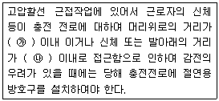
- ㉮ 10cm ㉯ 30cm
- ㉮ 30cm ㉯ 60cm
- ㉮ 30cm ㉯ 90cm
- ㉮ 60cm ㉯ 120cm
(정답률: 65%)
71. 다음은 어떤 방폭구조에 대한 설명인가?
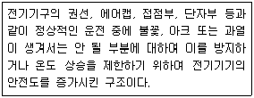
- 압력방폭구조
- 유입방폭구조
- 안전증방폭구조
- 본질안전방폭구조
(정답률: 73%)
72. 인체의 전기적 저항이 5000Ω이고, 전류가 3mA가 흘렀다. 인체의 정전용량이 0.1μF라면 인체에 대전된 정전하는 몇 μC 인가?
- 0.5
- 1.0
- 1.5
- 2.0
(정답률: 56%)
73. 정전기의 발생에 영향을 주는 요인이 아닌 것은?
- 물체의 표면상태
- 외부공기의 풍속
- 접촉면적 및 압력
- 박리속도
(정답률: 77%)
74. 인체의 저항을 500Ω이라 하면, 심실세동을 일으키는 정현파 교류에 있어서의 에너지적인 위험한계는 어느 정도 인가?
- 6.5~17.0J
- 15.0~25.5J
- 20.5~30.5J
- 31.5~38.5J
(정답률: 60%)
75. 전기기계.기구의 조작시 등의 안전조치에 관하여 사업주가 행하여야 하는 사항으로 틀린 것은?
- 감전 또는 오조작에 의한 위험을 방지하기 위하여 당해 전기기계.기구의 조작부분은 150lx 이상의 조도가 유지되도록 하여야 한다.
- 전기기계.기구의 조작부분에 대한 점검 또는 보수를 하는 때에는 전기기계.기구로부터 폭 50cm 이상의 작업공간을 확보하여야 한다.
- 전기적 불꽃 또는 아크에 의한 화상의 우려가 높은 600V 이상 전압의 충전전로작업에는 방염처리된 작업복 또는 난연성능을 가진 작업복을 착용하여야 한다.
- 전기기계.기구의 조작부분에 대한 점검 또는 보수를 하기 위한 작업공간의 확보가 곤란한 때에는 절연용 보호구를 착용하여야 한다.
(정답률: 49%)
76. 다음 그림은 심장맥동주기를 나타낸 것이다. T파는 어떤 경우인가?
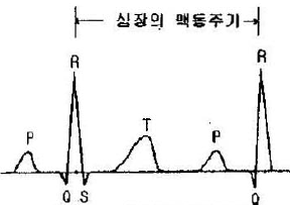
- 심방의 수축에 따른 파형
- 심실의 수축에 따른 파형
- 심실의 휴식시 발생하는 파형
- 심방의 휴식시 발생하는 파형
(정답률: 77%)
77. 내압방폭구조에서 안전간극(safe gap)을 적게 하는 이유로 가장 알맞은 것은?
- 최소점화에너지를 높게 하기 위해
- 폭발화염이 외부로 전파되지 않도록 하기 위해
- 폭발압력에 견디고 파손되지 않도록 하기 위해
- 쥐가 침입해서 전선 등을 갉아먹지 않도록 하기 위해
(정답률: 69%)
78. 감전사고의 긴급조치에 관한 설명으로 가장 부적절한 것은?
- 구출자는 감전자 발견 즉시 보호용구 착용여부에 관계없이 직접 충전부로부터 이탈시킨다.
- 감전에 의해 넘어진 사람에 대하여 의식의 상태, 호흡의 상태, 맥박의 상태 등을 관찰한다.
- 감전에 의하여 높은 곳에서 추락한 경우에는 출혈의 상태, 골절의 이상 유무 등을 확인, 관찰한다.
- 인공호흡과 심장마사지를 2인이 동시에 실시할 경우에는 약 1:5의 비율로 각각 실시해야 한다.
(정답률: 79%)
79. 의료용 전기전자(Medical Electronics) 기기의 접지방식은?
- 금속체 보호 접지
- 등전위 접지
- 계통 접지
- 기능용 접지
(정답률: 74%)
80. 가스증기위험장소의 금속관(후강)배선에 의하여 시설하는 경우 관 상호 및 관과 박스 기타의 부속품, 풀박스 또는 전기기계기구와는 몇 턱 이상 나사 조임으로 접속하는 방법에 의하여 견고하게 접속하여야 하는가?
- 2턱
- 3턱
- 4턱
- 5턱
(정답률: 70%)
5과목: 화학설비위험방지기술
81. 폭발하한계에 관한 설명으로 옳지 않은 것은?
- 폭발하한계에서 화염의 온도는 최저치로 된다.
- 폭발하한계에 있어서 산소는 연소하는데 과잉으로 존재한다.
- 화염이 하향전파인 경우 일반적으로 온도가 상승함에 따라서 폭발하한계는 높아진다.
- 폭발하한계는 혼합가스의 단위 체적당의 발열량이 일정한 한계치에 도달하는데 필요한 가연성 가스의 농도이다.
(정답률: 53%)
82. 다음 설명이 의미하는 것은?
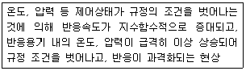
- 비등
- 과열.과압
- 폭발
- 반응폭주
(정답률: 75%)
83. 메탄, 에탄, 프로판의 폭발하한계가 각각 5vol%, 3vol%, 2.5vol%일 때 다음 중 폭발하한계가 가장 낮은 것은? (단, Le Chatelier의 법칙을 이용한다.)
- 메탄 20vol%, 에탄 30vol%, 프로판 50vol%의 혼합가스
- 메탄 30vol%, 에탄 30vol%, 프로판 40vol%의 혼합가스
- 메탄 40vol%, 에탄 30vol%, 프로판 30vol%의 혼합가스
- 메탄 50vol%, 에탄 30vol%, 프로판 20vol%의 혼합가스
(정답률: 53%)
84. 특수화학설비를 설치할 때 내부의 이상상태를 조기에 파악하기 위하여 필요한 계측장치로 가장 거리가 먼 것은?
- 압력계
- 유량계
- 온도계
- 습도계
(정답률: 70%)
85. 프로판(C3H8) 가스가 공기 중 연소할 때의 화학양론농도는 약 얼마인가? (단, 공기 중의 산소농도는 21vol%이다.)
- 2.5vol%
- 4.0vol%
- 5.6vol%
- 9.5vol%
(정답률: 50%)
86. 분진폭발의 발생 순서로 옳은 것은?
- 비산→분산→퇴적분진→발화원→2차폭발→전면폭발
- 비산→퇴적분진→분산→발화원→2차폭발→전면폭발
- 퇴적분진→발화원→분산→비산→전면폭발→2차폭발
- 퇴적분진→비산→분산→발화원→전면폭발→2차폭발
(정답률: 76%)
87. 연소 및 폭발에 관한 설명으로 옳지 않은 것은?
- 가연성 가스가 산소 중에서는 폭발범위가 넓어진다.
- 화학양론농도 부근에서는 연소나 폭발이 가장 일어나기 쉽고 또한 격렬한 정도도 크다.
- 혼합농도가 한계농도에 근접함에 따라 연소 및 폭발이 일어나기 쉽고 격렬한 정도도 크다.
- 일반적으로 탄화수소계의 경우 압력의 증가에 따라 폭발 상한계는 현저하게 증가하지만, 폭발하한계는 큰 변화가 없다.
(정답률: 28%)
88. 아세틸렌에 관한 설명으로 옳지 않은 것은?
- 철과 반응하여 폭발성 아세틸리드를 생성한다.
- 폭굉의 경우 발생압력이 초기압력의 20~50배에 이른다.
- 분해반응은 발열량이 크며 화염온도가 3100℃에 이른다.
- 용단 또는 가열작업시 1.3kgf/cm2 이상의 압력을 초과 하여서는 안 된다.
(정답률: 42%)
89. 다음 중 메탄-공기 중의 물질에 가장 적은 첨가량으로 연소를 억제할 수 있는 것은?
- 헬륨
- 이산화탄소
- 질소
- 브롬화메틸
(정답률: 41%)
90. 산업안전보건법상 부식성 물질 중 부식성 염기류는 농도가 몇 % 이상인 수산화나트륨.수산화칼륨 기타 이와 동등 이상의 부식성을 가지는 염기류를 말하는가?
- 20
- 40
- 50
- 60
(정답률: 67%)
91. 공업용 용기의 몸체 도색으로 가스명과 도색명의 연결이 옳은 것은?
- 산소 - 청색
- 질소 - 백색
- 수소 - 주황색
- 아세틸렌 - 회색
(정답률: 73%)
92. 산업안전보건법에 따라 유해.위험설비의 설치.이전 또는 주요 구조부분의 변경 공사시 공정안전보고서의 제출 시기는 착공일 며칠 전까지 관련기관에 제출하여야 하는가?
- 15일
- 30일
- 60일
- 90일
(정답률: 43%)
93. 자동화재탐지설비의 감지기 종류 중 열감지기가 아닌 것은?
- 차동식
- 정온식
- 보상식
- 광전식
(정답률: 78%)
94. 유독 위험성과 해당물질과의 연결이 옳지 않은 것은?(오류 신고가 접수된 문제입니다. 반드시 정답과 해설을 확인하시기 바랍니다.)
- 중독성 - 포스겐
- 발암성 - 골타르, 피치
- 질식성 - 일산화탄소, 황화수소
- 자극성 - 암모니아, 아황산가스, 불화수소
(정답률: 52%)
95. 단열반응기에서 100℉, 1atm의 수소가스를 압축하는 반응기를 설계할 때 안전하게 조업할 수 있는 최대압력은 약 몇 atm 인가? (단, 수소의 자동발화온도는 1075℉이고, 수소는 이상 기체로 가정하고, 비열비(r)는 1.4이다.)
- 14.62
- 24.23
- 34.10
- 44.62
(정답률: 24%)
96. 다음 중 포소화설비 적용대상이 아닌 것은?
- 유류저장탱크
- 비행기 격납고
- 주차장 또는 차고
- 유압차단기 등의 전기기기 설치장소
(정답률: 64%)
97. 화재시 발생하는 유해가스 중 가장 독성이 큰 것은?
- CO
- COCl2
- NH3
- HCN
(정답률: 76%)
98. 아세틸렌 용접장치에 설치하여야 하는 안전기의 설치요령이 옳지 않은 것은?
- 안전기를 취관마다 설치한다.
- 주관에만 안전기 하나를 설치한다.
- 발생기와 분리된 용접장치에는 가스저장소와의 사이에 안전기를 설치한다.
- 주관 및 취관에 가장 가까운 분기관마다 안전기를 부착 할 경우 용접장치의 취관마다 안전기를 설치하지 않아도 된다.
(정답률: 63%)
99. 다음 중 최소발화에너지가 가장 작은 가연성 가스는?
- 수소
- 메탄
- 에탄
- 프로판
(정답률: 66%)
100. 다음 중 종이, 목재, 섬유류 등에 의하여 발생한 화재의 화재급수로 옳은 것은?
- A급
- B급
- C급
- D급
(정답률: 76%)
6과목: 건설안전기술
101. 와이어로프를 달비계에 사용할 때의 사용금지 기준으로 틀린 것은?
- 이음매가 있는 것
- 꼬인 것
- 지름의 감소가 공칭지름의 5%를 초과하는 것
- 와이어로프의 한 꼬임에서 끊어진 소선의 수가 10% 이상인 것
(정답률: 76%)
102. 물로 포화된 점토의 다지기를 하면 압축하중으로 지반이 침하하는데 이로 인하여 간극수압이 높아져 물이 배출되면서 흙의 간극이 감소하는 현상을 무엇이라고 하는가?
- 액상화
- 압밀
- 예민비
- 동상현상
(정답률: 55%)
103. 동력을 사용하는 항타기 또는 항발기의 도괴를 방지하기 위한 준수사항으로 틀린 것은?
- 연약한 지반에 설치할 경우에는 각부나 가대의 침하를 방지하기 위하여 깔판.깔목 등을 사용한다.
- 평형추를 사용하여 안정시키는 경우에는 평형추의 이동을 방지하기 위하여 가대에 견고하게 부착시킨다.
- 버팀대만으로 상단부분을 안정시키는 경우에는 버팀대는 3개 이상으로 한다.
- 버팀줄만으로 상단부분을 안정시키는 경우에는 버팀줄을 2개 이상으로 한다.
(정답률: 61%)
104. 철골 조립작업에서 작업발판과 안전난간을 설치하기가 곤란한 경우 안전대책으로 가장 타당한 것은?
- 안전벨트 착용
- 달줄, 달포대의 사용
- 투하설비 설치
- 사다리 사용
(정답률: 65%)
1⑤. 터널공사 시 인화성 가스가 일정 농도 이상으로 상승하는 것을 조기에 파악하기 위하여 설치하는 자동경보장치의 작업시작 전 점검해야 할 사항이 아닌 것은?
- 계기의 이상유무
- 발열 여부
- 검지부의 이상유무
- 경보장치의 작동상태
(정답률: 66%)
106. 건물기초에서 발파허용진동치 규제 기준으로 틀린 것은?
- 문화재 : 0.2cm/sec
- 주택, 아파트 : 0.5cm/sec
- 상가 : 1.0cm/sec
- 철골콘크리트 빌딩 : 0.1~0.5cm/sec
(정답률: 69%)
107. 권상용 와이어로프의 절단하중이 200ton일 때 와이어 로프에 걸리는 최대하중의 값을 구하면? (단, 안전계수는 5임)
- 1000ton
- 400ton
- 100ton
- 40ton
(정답률: 61%)
108. 다음 중 지하수위를 저하시키는 공법은?
- 동결 공법
- 웰포인트 공법
- 뉴매틱케이슨 공법
- 치환 공법
(정답률: 71%)
109. 항타기 또는 항발기의 권상장치 드럼축과 권상장치로 부터 첫 번째 도르래의 축 간의 거리는 권상장치 드럼폭의 몇 배 이상으로 하여야 하는가?
- 5배
- 8배
- 10배
- 15배
(정답률: 54%)
110. 다음은 달비계 또는 높이 5m 이상의 비계를 조립.해체하거나 변경하는 작업에 대한 준수사항이다. ( )안에 들어갈 숫자는?
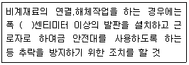
- 15
- 20
- 25
- 30
(정답률: 54%)
111. 사업주가 유해.위험방지 계획서 제출 후 건설공사 중 6개월 이내마다 안전보건공단의 확인사항을 받아야 할 내용이 아닌 것은?
- 유해.위험방지 계획서의 내용과 실제공사 내용이 부합 하는지 여부
- 유해.위험방지 계획서 변경 내용의 적정성
- 자율안전관리 업체 유해.위험방지 계획서 제출.심사 면제
- 추가적인 유해.위험요인의 존재 여부
(정답률: 70%)
112. 가설통로의 구조에 대한 기준으로 틀린 것은?
- 경사가 15도를 초과하는 경우에는 미끄러지지 아니하는 구조로 할 것
- 경사는 20도 이하로 할 것
- 추락의 위험이 있는 장소에는 안전난간을 설치할 것
- 수직갱에 가설된 통로의 길이가 15미터 이상인 경우에는 10미터 이내마다 계단참을 설치할 것
(정답률: 77%)
113. 콘크리트 강도에 영향을 주는 요소로 거리가 먼 것은?
- 거푸집 모양과 형상
- 양생 온도와 습도
- 타설 및 다지기
- 콘크리트 재령 및 배합
(정답률: 76%)
114. 건설업의 산업안전보건관리비 사용항목에 해당되지 않는 것은?
- 안전시설비
- 근로자 건강관리비
- 운반기계 수리비
- 안전진단비
(정답률: 74%)
115. 사다리식 통로에 대한 설치기준으로 틀린 것은?
- 발판의 간격을 일정하게 할 것
- 발판과 벽과의 사이는 15cm 이상의 간격을 유지할 것
- 사다리식 통로의 길이가 10m 이상인 때에는 3m 이내 마다 계단참을 설치할 것
- 사다리의 상단은 걸쳐놓은 지점으로부터 60cm 이상 올라가도록 할 것
(정답률: 74%)
116. 미리 작업장소의 지형 및 지반상태 등에 적합한 제한속도를 정하지 않아도 되는 차량계 건설기계의 속도 기준은?
- 최대 제한 속도가 10km/h 이하
- 최대 제한 속도가 20km/h 이하
- 최대 제한 속도가 30km/h 이하
- 최대 제한 속도가 40km/h 이하
(정답률: 75%)
117. 이동식 비계를 조립하여 작업을 하는 경우의 준수사항으로 틀린 것은?
- 승강용사다리는 견고하게 설치할 것
- 작업발판의 최대적재하중은 250kg을 초과하지 않도록 할 것
- 비계의 최상부에서 작업을 하는 경우에는 안전난간을 설치할 것
- 작업발판은 항상 수평을 유지하고 작업발판 위에서 안전난간을 딛고 작업을 하거나 받침대 또는 사다리를 사용하여 작업하도록 할 것
(정답률: 68%)
118. 로드(rod).유압잭(jack) 등을 이용하여 거푸집을 연속적으로 이동시키면서 콘크리트를 타설할 때 사용되는 것으로 silo공사 등에 적합한 거푸집은?
- 메탈폼
- 슬라이딩폼
- 워플폼
- 페코빔
(정답률: 79%)
119. 옥외에 설치되어 있는 주행크레인에 이탈을 방지하기 위한 조치를 취해야 하는 것은 순간 풍속이 매 초당 몇 미터를 초과할 경우인가?
- 30m
- 35m
- 40m
- 45m
(정답률: 74%)
120. 잠함 또는 우물통의 내부에서 근로자가 굴착작업을 하경우에 바닥으로부터 천장 또는 보까지의 이는 최소 얼마 이상으로 하여야 하는가?
- 1.2 미터
- 1.5 미터
- 1.8 미터
- 2.1 미터
(정답률: 54%)